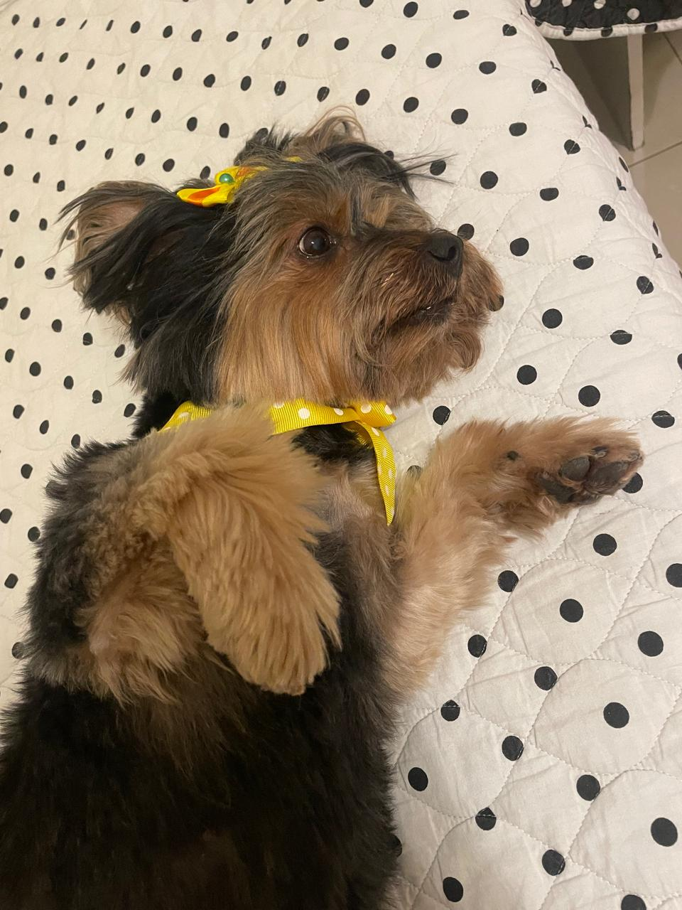

Tudo sobre os fofissímos yorkshire

O Yorkshire Terrier é uma raça de cachorro de pequeno porte, originária da Inglaterra, conhecida por sua pelagem longa e sedosa, inteligência e personalidade vibrante. Pesando em torno de 3,2 kg, são cães extremamente apegados aos tutores, corajosos e ótimos companheiros para espaços compactos como apartamentos
Porte: Pequeno, pesando oficialmente até 3,2 kg. (Atenção: variações como "zero", "micro" ou "mini" não são reconhecidas e costumam estar associadas a problemas de saúde).
Pelagem: Longa, lisa e muito fina. Geralmente possui a coloração azul-aço no corpo e tons de castanho-dourado na cabeça e nas pernas. Eles soltam poucos pelos, o que os torna uma boa opção para pessoas com alergias.
Expectativa de Vida: Podem viver entre 14 e 18 anos quando recebem os devidos cuidados de saúde.
Apesar do tamanho, o Yorkshire mantém o instinto de um terrier: é um cão alerta, destemido, muito ativo e inteligente. Eles exigem escovação frequente (ou tosa, como a popular "tosa bebê") para evitar nós, além de exercícios físicos e mentais diários para evitar que fiquem entediados ou comecem a latir excessivamente.